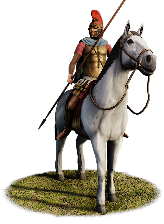
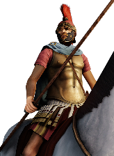
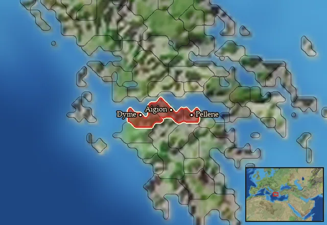

RTR: Imperium Surrectum
RTR: Imperium SurrectumAchaian Xystophoroi


Class: heavy · Category: cavalry · Men per unit: 30
Reforms: No longer recruitable after The Great Reforms of Philopoimen · Becomes a newer unit with Military innovations have arrived!, The Great Reforms of Philopoimen
Description
The Achaian Xystophoroi lack the tactical training of their Macedonian counterparts, but are very similarly equipped. Carrying a long two-pointed wooden lance, the xyston; these horsemen rely on the devastating effect of a rapid charge rather than on heavy armour or shields. Even if too poorly trained to survive proper frontal engagements with the enemy, these early Achaian Xystophoroi are a useful unit to charge down and hunt enemy skirmishers or other light units.
Historical background
The Xystophoroi were the cavalry introduced into Greek warfare by Philip II and his son Alexander the Great of Macedon. They were named after the xyston, a wooden lance of 3.5 to 4.25m length with two pointy ends (the exact length remains a topic of hot debate among historians, however, cf. Bugh, Greek Cavalry 2020, pp. 73-74). Rather than to rely on heavy armour and shields like the horsemen of e.g. Celts or Thracians, the Xystophoroi relied on the devastating effect of a rapid charge with their long lances. Alexander used them to great effect and his Hetairoi were armed in the same way. Impressed by the successes of Alexander’s cavalry, most Greeks soon swapped their cavalry spears for the longer lances – including the Achaians (Head, Armies 1982, p. 117).
However, equipment is not everything, and the Achaians soon realised that fighting with a sarissa on horseback was not much easier than using it in the Macedonian phalanx – something they also only adopted much later (cf. description of Achaian phalangites). Therefore, they were not very efficient on the battlefield and it would take them until the reforms of Philopoimen of Megalopolis (253-183/182 BC) in 207 BC to address their weaknesses. The historian Polybios (ca. 200-118 BC), himself a former cavalry officer of the Achaian League, gives the following account (Polyb. X, 22, 6-7; 23, 1-8):
"6 Being appointed by the Achaians to the command of the cavalry at this time and finding the regiments in every way disorganised and the men dispirited, 7 he made them in a short time not only superior to what they had been but superior to the enemy by submitting them to a course of real training and inspiring them with such zeal as could not fail to ensure success [...] 23, 1 The movements in which he thought the cavalry should be trained, as being applicable to all circumstances, were as follows. 2 Each separate horseman must learn to wheel his horse to the left or to the right and also to wheel round and again return. 3 In sections and double sections they were to wheel so as to describe either a quarter, a half, or three-quarters of a circle and next to dash out at full speed from either of the wings or from the centre in single or double companies and then reining in to resume their formation in troops, squadrons, or regiments. 5 Besides this they must be able to extend their line on either wing either by filling up intervals or by bringing up men from the rear. 6 He considered that deployment by wheeling required no practice, as it was much the same thing as falling into marching order. 7 After this they were to practise charging and retiring in every kind of formation until they could advance at a tremendous pace but without falling out of line or column, keeping at the same time the proper distances between the squadrons, 8 as he considered that nothing was more dangerous or ineffectual than cavalry which have broken their order in squadrons and choose to engage the enemy while in this state.”
This makes the inferiority of the early Achaian horsemen very clear. Though equipped like other Xystophoroi, they were unable to perform tactical manoeuvres due to poor training. The mountainous region of Achaia on the northern Peloponnese had no great cavalry traditions and the local nobility was probably not keen to devote their time to horse riding lessons. Yet, the early Achaian Xystophoroi are a useful unit to charge down and hunt enemy skirmishers or other light units. The best men of the cavalry are assigned to guard the commanders of the armies and they will die for Achaia.
Stats
| Rank in roster | Rank in roster | Rank in roster | Rank in roster | ||||||||
|---|---|---|---|---|---|---|---|---|---|---|---|
| Men per unit | 30 | █········· 8% | Attack | 10 | ███······· 27% | Charge bonus | 26 | ████████·· 84% | Defence | 30 | ████······ 44% |
| · armour | 14 | ████████·· 80% | · defence skill | 16 | ███······· 28% | · shield | 0 | █········· 0% | Morale | 10 | ███······· 30% |
| Discipline | Normal | Training | Highly trained | Recruitment cost | 1,773 dn | ███······· 34% | Upkeep per turn | 714 dn | ███████··· 67% | ||
| Turns to recruit | 2 |
Weapons
Its secondary attack is the stronger one — 11 against 10.
| Primary | Secondary | Primary | Secondary | Primary | Secondary | Primary | Secondary | ||||
|---|---|---|---|---|---|---|---|---|---|---|---|
| Attack | 10 | 11 | Charge bonus | 26 | 21 | Type | melee · blade | melee · blade | Damage | piercing | slashing |
Defence
| Primary | Secondary | Primary | Secondary | Primary | Secondary | Primary | Secondary | ||||
|---|---|---|---|---|---|---|---|---|---|---|---|
| Total | 30 | — | Armour | 14 | — | Defence skill | 16 | — | Shield | 0 | — |
Condition and terrain
| Hit points | 1 | Mount | heavy horse | Ground: scrub / sand / forest / snow | -4 / -1 / -8 / -1 | Charge distance | 40 |
| Formations | Square |
Technical stats
| Time between blows (primary / secondary) | 2.5 s / 2.5 s | Extra fatigue in hot climates | 4 | Spacing between men: close / loose | 2 × 4.8 m / 3 × 7.2 m | Default ranks | 5 |
In battle: Very good stamina
Who can recruit it
A core roster unit for one faction, which can raise it anywhere it holds the right building:
Any faction holding one of the provinces below can field it.
Exactly what a settlement must have, route by route (4)
| Building | Also requires | Building | Also requires | Building | Also requires | Building | Also requires |
|---|---|---|---|---|---|---|---|
| Any settlement | Garrison Building or Tier 1 Military Industrial Complex · Achaian area of recruitment · Any Government (Dependency, Indirect Rule or Direct Rule) · Tier 2 Colony not built | Indirect Rule | Garrison Building or Tier 1 Military Industrial Complex · not The Great Reforms of Philopoimen · Tier 1 Colony | Direct Rule | Garrison Building or Tier 1 Military Industrial Complex · not The Great Reforms of Philopoimen · Tier 1 Colony | Homeland | Garrison Building or Tier 1 Military Industrial Complex · not The Great Reforms of Philopoimen |
Areas of recruitment

| Zone | Provinces | ||||||
|---|---|---|---|---|---|---|---|
| Achaian | 3 |